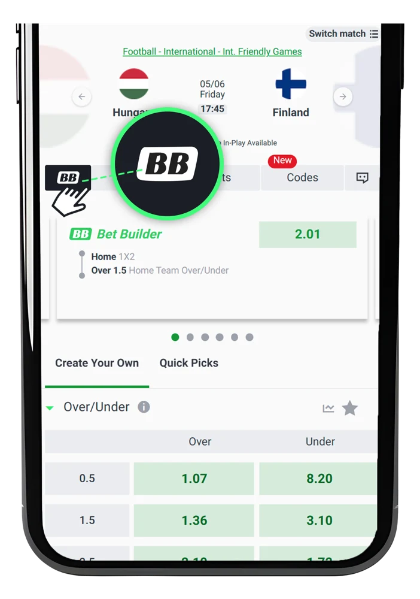
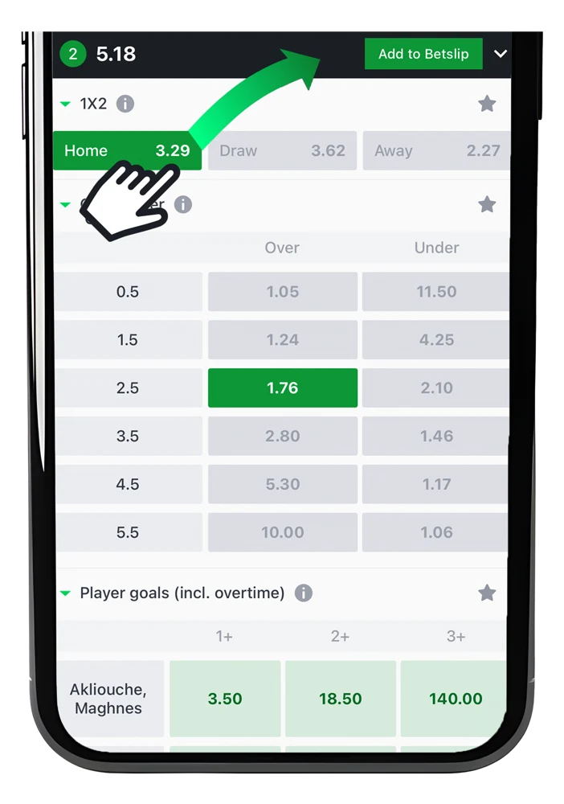
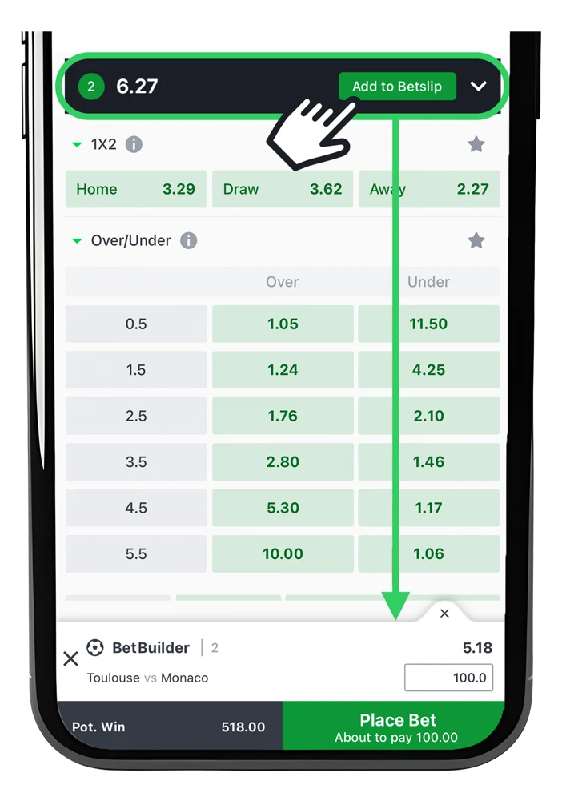

Bet Builder lets you combine multiple selections from the same pre-match
football event into one bet, giving you more control, higher odds, and an
enhanced betting experience.
1. Choose a football match from pre-match events, and select Bet Builder.

2. Select multiple outcomes (e.g., match winner, goals, cards, corners).

3. Add your Bet Builder to the betslip, place the bet and enjoy the action.

1. Fully customizable – create unique bets tailored to your predictions.
2. Higher potential payouts – the more selections, the bigger the odds.
3. All in one match – no need to bet across multiple games.
Terms and Conditions:
1. AnyWin, Edit Bet, Flexi, or 1Cut will not be available on any Bet Builder bet.
2. Live betting and Cashout are not available with Bet Builder.
3. Bore Draw and 2UP will be available on applicable bet types.
4. Bet Builder may not be available on all football matches, and not all markets are available within Bet Builder.
5. SportyBet will not be responsible if the Bet Builder feature is not available for technical reasons.
6. SportyBet reserves the right to reverse the settlement of a Bet Builder bet if the bet or a selection within the bet is settled in error.
7. SportyBet reserves the right to accept or decline any bet requested for any competition or market, or bet type that is included in the Bet Builder feature.
8. SportyBet reserves the right to amend, suspend or remove the Bet Builder feature (or any part of it) at any time for any event, fixture, market, or customer.
9. SportyBet reserves the right to remove the Bet Builder feature for any customer or group of customers where it has reasonable grounds to believe that the customer or group of customers is misusing the feature.